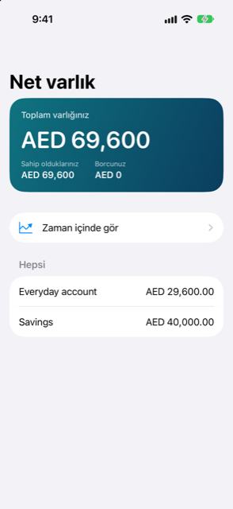
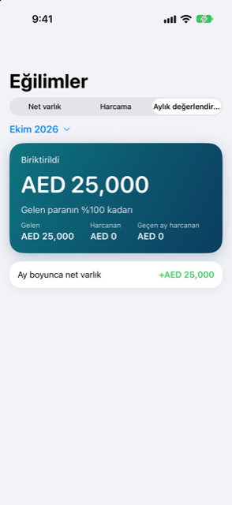

Kılavuz › Özet
Eğilimler ve net varlık
Bugünkü ve zaman içindeki net varlık, ay ay harcama, aylık gözden geçirme.
Insights, uzun perspektif için iki ekran sunar. Net varlık, bugün, ana para biriminizle, sahip olduklarınızın hepsinden borçlarınızın hepsini çıkarılmış hâlini gösterir. Eğilimler, zaman içinde net varlığı çizer, harcamayı ay aya karşı koyar ve tek bir ayın gözden geçirilmesini sunar.


Ne zaman kullanılır
- Net değerinizi gösteren tek bir rakam, onu oluşturan parçalarıyla birlikte, istiyorsunuz.
- O rakamın aylar boyunca yukarı mı aşağı mı gittiğini görmek istiyorsunuz.
- Bu ayın harcamasını geçen ayla, kategori kategori, karşılaştırmak istiyorsunuz.
- Bir ay sonunda, neyin girdiğine, neyin çıktığına ve neyin biriktirildiğine geriye dönük bakmak istiyorsunuz.
Net varlık
Insights sekmesini açın ve Net varlık seçeneğine dokunun. Insights ekranındaki satır, rakamı neye sahip olduğunuz ve neye borçlu olduğunuzla birlikte zaten gösterir.
- Üstteki kart Toplam varlığınızı gösterir, yanında Sahip olduklarınız ve Borcunuz.
- Onun altında Zaman içinde gör satırı vardır; bu satır, Eğilimler ekranını Net varlık sekmesinde açar.
- Aşamalı alımlarda hâlâ borcunuz varsa, bunlar Söz verilen, henüz ödenmeyen altında, her biri kendi vade tarihiyle listelenir. Onların ardından, ödendiklerinde net varlığın ne olacağını gösteren bir Bu taahhütlerden sonra satırı gelir. Bunlar üstteki rakamda borç sayılmaz.
- Hepsi bölümü hesaplarınızı, holdinglerinizi, varlıklarınızı ve borçlarınızı listeler; her biri ana para biriminizdeki tutarıyla, ya da henüz bir kuru yoksa kendi para birimiyle. Bir holding, değerlemesini bir birim değeri çarpı birim sayısı olarak, as-of tarihiyle birlikte gösterir. Değer bayatlamışsa · bayat ibaresini gösterir.
Net varlık, yatırımları ve diğer varlıkları yalnızca ödediğiniz bedelle değil, onlara verdiğiniz değerle sayar. Ayarlamamış olduğunuz bir kura ihtiyaç duyan bir öğe, para birimi adıyla birlikte "… için bir kur gerekli" ibaresiyle işaretlenir. Geri ödenmesi beklenmeyen bir şey dışarıda bırakılır; "Dışarıda: geri ödenmesi beklenmiyor" satırıyla birlikte.
Eğilimler
Insights ekranında Eğilimler seçeneğine dokunun — Aylık gözden geçirme sekmesinde açılır. Üstteki üç sekmeden birini seçin.
Net varlık
Her ayın sonundaki net varlığın bir grafiği, bugüne ait bir noktayla biterek. Kaydedilmiş işlemlerinizden ve holdinglere verdiğiniz değerlerden çizilir; bir şey kaydettiğinizde ya da bir değeri güncellediğinizde hareket eder, tek başına değil. Üstte bir kart, en yeni rakamı ve en erken noktadan itibaren ne kadar değiştiğini, bir tarihle birlikte verir. Gösterilecek iki ay sonundan daha azı kaldığında, ekranda Henüz yeterli geçmiş yok yazar.
Harcama
Ay ay harcamanın bir sütun grafiği; o aylardaki beş en büyük kategori renklendirilmiş, kalanı Diğer olarak toplanmış. Yan yana en fazla altı ay gösterilir. Son ay, şu ana kadar olan aydır; dolayısıyla onun rakamları yalnızca geçmiş olan günleri kapsar. Altında, Bu ay ve geçen ay, en büyük sekiz kategoriye kadar olanını, ne değiştiğiyle listeler: bir ok ve bir tutar, ve hesaplanabiliyorsa bir yüzde. Geçen ay hiçbir şeyi olmayan bir kategori Bu ay yeni der. Değişiklikler hem bir yön oku hem bir renk taşır; böylece yönü iki şekilde de okuyabilirsiniz.
Aylık gözden geçirme
Tek bir ayın gözden geçirilmesi — önce son tam ay, ya da üstteki menüdeki aylardan herhangi biri. Her bölüm, gösterilecek bir şey olduğunda yalnızca o zaman görünür:
- Bir Biriktirildi kartı, ya da geçerli ay için Şimdiye kadar biriken: giren eksi harcanan, ve bir şey girmişse girenin bir payı olarak.
- Gelen, Harcanan ve, daha önce bir ay varsa, yanında Geçen ay harcanan.
- Nereye gitti: ayın en büyük kategorileri, bir önceki aya göre değişimleriyle.
- En büyük harcamalar: ayın en büyük üç tek ödemesi, tarihleriyle.
- Ay boyunca net varlık: net varlığınız, ay sürerken nasıl hareket etti.
Bilmekte fayda var
- Tüm rakamlar ana para biriminizdedir, kayıtlı kurlarla dönüştürülür. Kuru olmayan bir tutar, siz bir kur ayarlayana dek toplamların dışında bırakılır.
- Eğilimler, en fazla altı ayın ay ay harcamasını gösterir; net varlık grafiği daha geriye gider, ay sonu başına bir nokta.
- En büyük harcamalar listesi yalnızca onaylanmış kayıtları sayar ve mutabakat düzeltmelerini dışarıda bırakır; böylece yalnızca bir ekstreyle eşleşmek için yapılan bir düzeltme gerçek harcamanın yerini işgal etmez.
- Bu ekranlar kendi geçmişiniz hakkında bilgi verir. Bunlar tahminler ve kayıtlardır, finansal tavsiye değildir.
İlgili
Anlaşılmayan ya da eksik bir şey mi var? support@raveniq.ai adresine yazın ve hangi sayfa olduğunu belirtin.